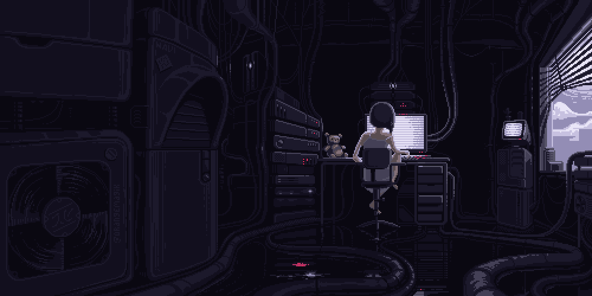
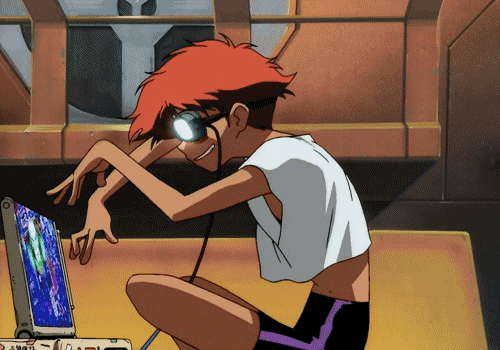
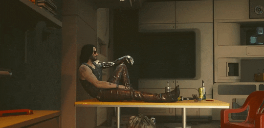

Welcome to my responses
If my website were a place, it’d be a liminal space with a multiple computers covered in wires, like the character lain.

Carpenter likes making websites by hand as if they were physical crafts like knitting perfering messier, personal code. I relate to that SO MUCH as it creates a more visual pleasing look in my opinion.
Choi reflects on learning to code and how the process felt empowering but also strange. With the experience I have gained, I feel the same way and in a sense it feels free since I am able to do anything and everything.

Chimero speaks on the current state of websites feeling less personal and more corporate. I want my websites to feel alive and interactive, so I understand this feeling.
